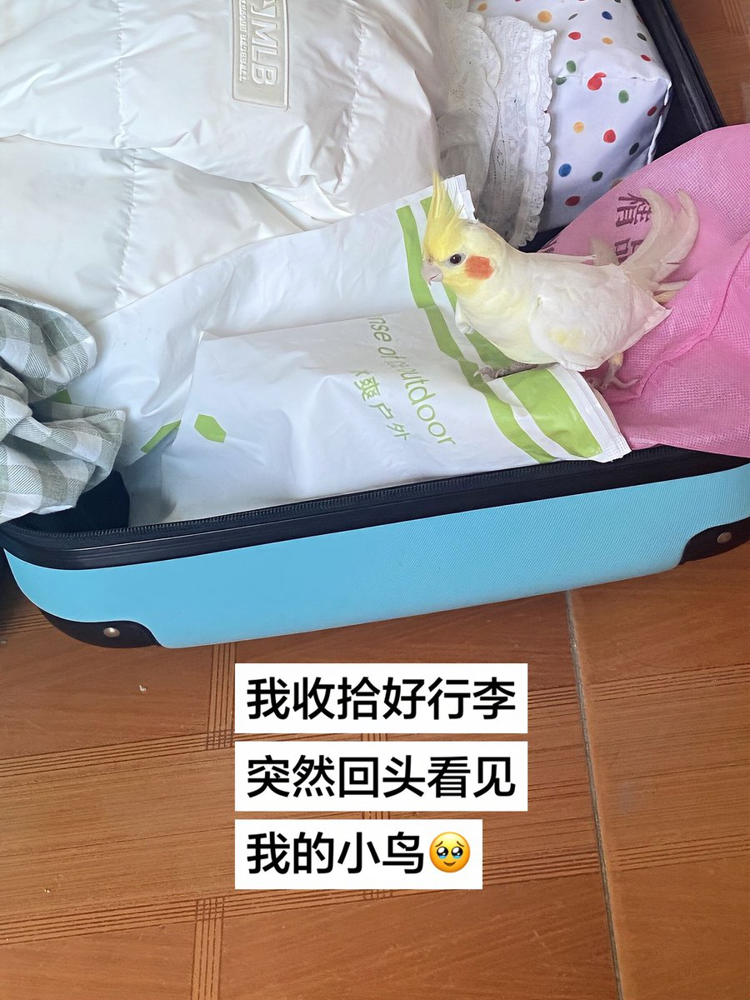

雪秋
@XUEQIUxka
《带不走的行李》我的行李箱很小，小到只能装下几件衣服，一些日常生活用品，我这个人比较懒，每次出门都是临时收拾东西，一件件塞进我的箱子，在我快要盖上行李出发的时候，突然发现阿泰站在我行李箱里面，它很焦急的左顾右盼，好像在寻找能容的下它的位置，虽然它不会说话，但我都能懂，阿泰小小的脑子不知道分别是什么，只知道当我打开这个箱子的时候，我又会消失一段时间，可能是几个月也可能更久见不到，我只能缓慢地暂停我手下收拾的动作，看着这个我唯一带不走的“行李”🥹
